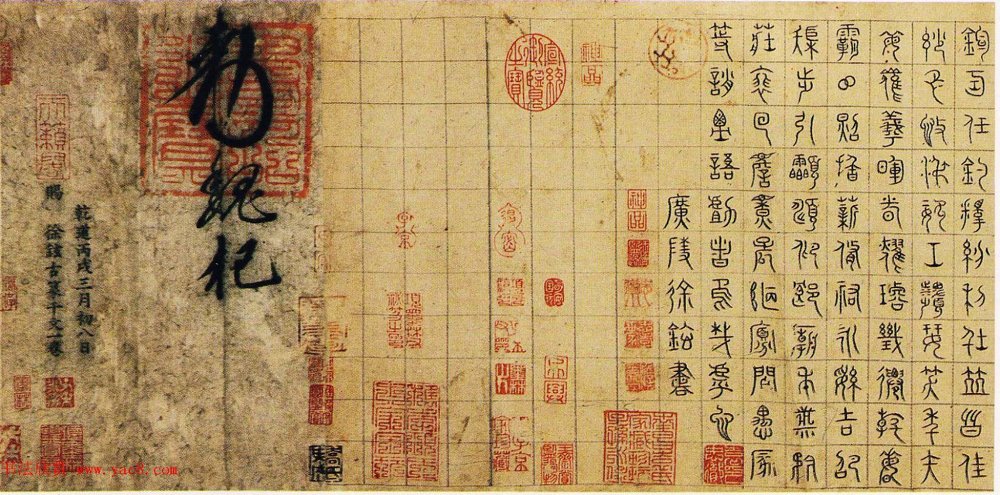
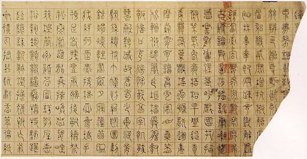
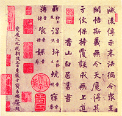
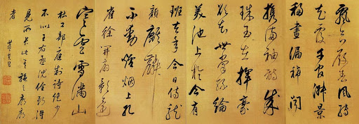
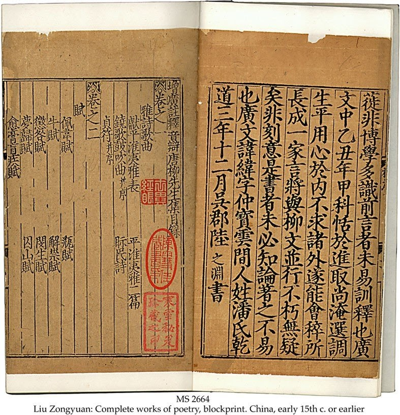
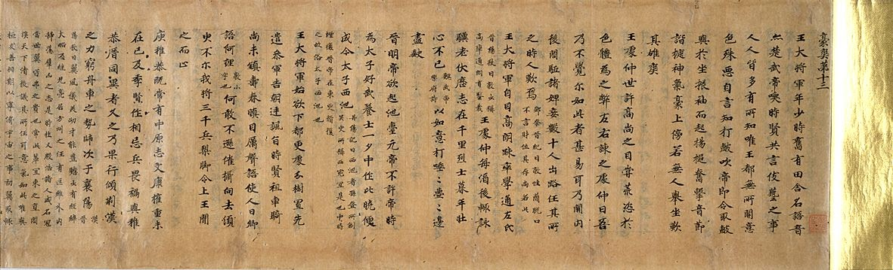
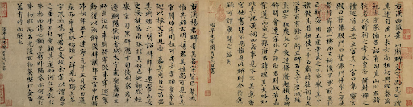
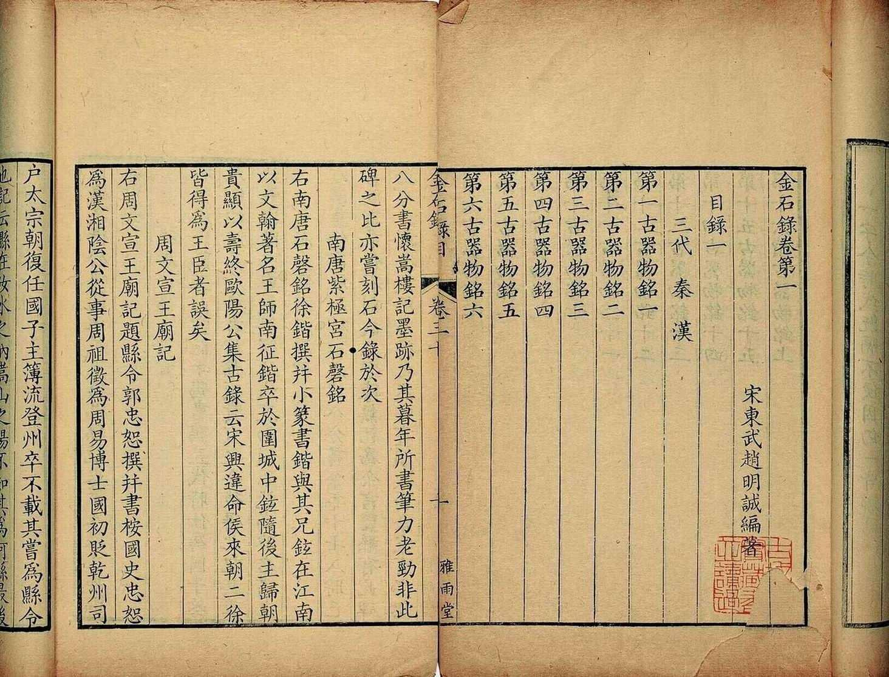
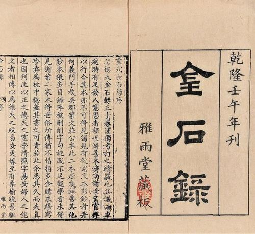

The Blog of Li QingZhao
A modern love-letter to one of China's greatest poets and scholars.
We seek to re-imagine the once-legendary collection of ancient literature and creative work of Li QingZhao, poet and scholar from the Song dynasty.
We consolidate known records and remnants of her remaining collection, and through this we hope to achieve a way to return to her a sense of ownership over what was lost to her.
Many of her well-known and celebrated poems are collected here. Her collection is not only an archive of reknown scholars throughout the dynasties, but as well a record of her own terrific poems - which carry a grace and prose still appreciated to this day.
We have collaborated to interpolate the surviving remnants of her collections based on her afterword.

The "Thousand Character Text" is a famous Chinese poem utilized as a primer for young children to learn Chinese characters. It is likely that Li's original collection included a manuscript of the literary poem.

Among Li's collection was likely a manuscript copy of the "Shurangama Sutra" by author Bai Juyi.


Li QingZhao mentioned losing a several manuscript copies of works by Chinese literary author Du Fu, following the siege against her hometown as outlined in her afterword.

Li QingZhao possessed literature authored by Chinese poet and scholar Han Yu, a significant benefactor towards the development of Neo-Confucianism.

Li QingZhao discusses volume copies of "A New Account on the Tales of the World", a historical compilation authored by many Chinese scholars, musicians and poets.

Below is the Jigulu Postscript and Li QingZhao's writing on the back of the script - a likely addition to her archival collection.

Li QingZhao held a vast array of bronze and metal inscriptions, many of which were lost through several unfortunate circumstances.

Compiled below are a consolidation of the poems authored by Li QingZhao.
常記溪亭日暮。
沈醉不知歸路。
興盡晚回舟
誤入藕花深處。
爭渡。
爭渡。
驚起一灘鷗鷺。
I often recall one sunset in a riverside pavilion.
Having drunk too much, I forgot the way home.
Knowing it was late, I started back in my boat at dusk
but paddled by mistake into a thick patch of lotuses.
Struggling to get out,
struggling to get out,
I startled a whole sandbar of egrets into flight.
-------------
昨夜雨疏風驟。
濃睡不消殘酒。
試問捲簾人
却道海棠依舊。
知否。
知否。
應是綠肥紅瘦。
Last night the rain was intermittent, the wind blustery.
Deep sleep did not dispel the lingering wine.
I tried asking the maid raising the blinds,
who said the crab-apple blossoms were as before.
“Don’t you know?
Don’t you know?
The greens must be plump and the reds spindly.”
小院閑窗春色深。
重簾未捲影沈沈。
倚樓無語理瑤琴。
遠岫出雲催薄暮
細風吹雨弄輕陰。
梨花欲謝恐難禁。
A small courtyard and lattice window, the spring colors are vivid.
The double blinds are not lifted, shadows gather deep inside.
She leans on the balcony, saying nothing, plucking a pearled zither.
A distant cave emits clouds, hurrying the onset of dusk,
a light wind brings rain, rippling the sparse shade.
The pear blossoms will soon wither—no preventing it, I fear.
红藕香殘玉簟秋。
輕解羅裳
獨上蘭舟。
雲中誰寄錦書來
雁字回時
月滿西樓。
花自飄零水自流。
一種相思
兩處閑愁。
此情無計可消除
纔下眉頭
却上心頭。
The scent of red lotuses fades in jade mat autumn.
Lightly she unties her gauze robe
to board the magnolia boat alone.
Amid the clouds, who sends a brocade letter?
As the wild geese character comes back1
moonlight fills the western tower.
Blossoms fall on their own, the water flows by itself.
One type of longing,
idle sadness in two places.
There’s no means to get rid of this feeling.
As soon as it leaves the brow
it surfaces in the heart.
薄霧濃雰愁永晝。
瑞腦銷金獸。
時節又重陽
寶枕紗廚
半夜涼初透。
東籬把酒黃昏後。
有暗香盈袖。
莫道不銷魂
簾捲西風
人比黃花瘦。
Light mist, thick vapors, sad through an endless morning.
Camphor incense turns to ash inside the golden beast.
Again it’s Double Ninth Festival,
to the precious pillow, within the gauze netting,
a chill enters at midnight.
Holding wine after sunset by the eastern fence,
a subtle fragrance fills the sleeves.
Don’t say she’s not heartbroken—
as the west wind lifts the blinds,
she’s more withered than the yellow flowers.
夜來沈醉卸妝遲。
梅萼插殘枝。
酒醒熏破春睡
夢遠不成歸。
人悄悄
月依依。
翠簾垂。
更挼殘蕊
更撚餘香
更得些時。
Drunk last night, I delayed taking off my make-up.
A withered sprig of plum blossoms still sits in my hair.
Sobering up now, their scent interrupts my spring sleep,
my distant dream did not carry me home.
No sounds of people now,
the moon hangs longingly in the sky.
The green blinds are lowered.
Again, I toy with the fading flowers,
pinching out, again, what fragrance remains,
to make it last, again, a little longer.
尋尋覓覓
冷冷清清
悽悽慘慘戚戚。
乍暖還寒時候
最難將息。
三杯兩盞淡酒
怎敵他
晚來風力。
雁過也
正傷心
卻是舊時相識
滿地黃花堆積。
憔悴損
如今有誰忺摘。
守著窗兒
獨自怎生得黑。
梧桐更兼細雨
到黃昏
點點滴滴。
這次第
怎一箇愁字了得。
Searching, hunting, seeking, looking,
so chilly and yet so clear.
distressed, dismal, and forlorn.
Warm awhile then cold again, it’s that season,
the worst for taking care of yourself.
How can two or three cups of weak wine
hold up against
the strength of the evening wind?
The wild geese have flown past,
truly saddening the heart,
what’s more, I recognize them from years past.
Yellow petals cover the ground, strewn in piles.
I’m so haggard and weakened now,
who bothers to pluck them anymore before they fall?
I sit beside the window, all by myself,
how could it have turned so black outside?
Paulownia trees and fine rain,
until dusk has fallen, I listen to
drip after drip, drop after drop.
This scene, this feeling—
how could the word “sorrow” ever suffice?
風住塵香花已盡
日晚倦梳頭。
物是人非事事休。
欲語淚先流。
聞說雙溪春尚好
也擬泛輕舟。
只恐雙溪舴艋舟。
載不動
許多愁。
When the winds stop, the ground is fragrant, the flowers all are down,
as the day wears on I’m too lazy to comb my hair.
The objects are right, the people wrong, everything is over now!
About to speak, tears first flow.
I’ve heard spring is still lovely at Twin Streams,
I’d like to go boating in a light skiff.
But I fear the little grasshopper boats they have
could not carry
such a freight of sorrow.
Cover photo courtesy of China Culture
"New Account on the Tales of the World" photo courtesy of Tokyo National Museum